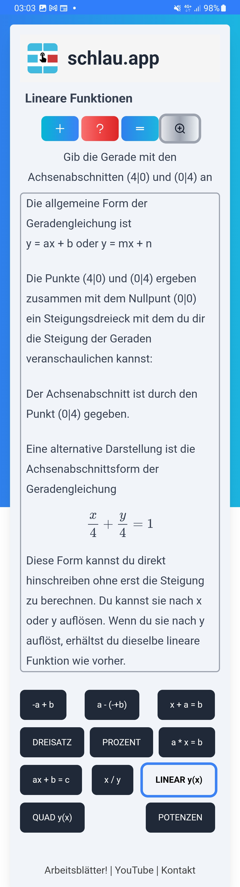

Mache alle Aufgaben nicht nur schriftlich, sondern auch mit Zeichnung.

Die Themen der Aufgaben:
Gib die Gerade mit den Achsenabschnitten (3|0) und (0|-3) an
Gegeben: Gerade y = f(x) = 5x + 1 und Punkt P (3|16). Liegt der Punkt auf der Geraden?
Verschiebe die Gerade y = 3x + 5 vertikal um den Wert -4
Gib die Gleichung einer Geraden durch den Punkt (5|4) mit der Steigung 1 an
Gib die Gleichung einer Geraden an, die durch den Punkt (-5|4) geht und parallel zur x-Achse verläuft.
Berechne die Nullstelle der Funktion y = 4x + 2
Gegeben ist die Gerade y = -x + 1. Welche Gerade spiegelt diese an der x-Achse?
Gegeben ist die Gerade y = -x + 1. Welche Gerade spiegelt diese an der x-Achse?
Gib zur Geraden y = 4x + 5 eine senkrechte Gerade an, die durch den Ursprung (0|0) geht.
Tricks für lineare Funktionen
Die Graphik ist wichtig, sie gehört dazu. Stelle sicher, dass du ein einwandfreies Koordinatensystem zeichnen kannst mit Achsenbeschriftung und passenden Einheiten.
Zeichne genau! Wähle ein großes Steigungsdreieck, dann wird die Gerade genauer. Z.B. die Steigung ist 1/2. Steigungsdreieck, Breite und Höhe:
Ganz schlecht:
Geht schon:
Gut:
Die Konstruktion mit Steigungsdreieck machen wir uns in diesem Video klar: